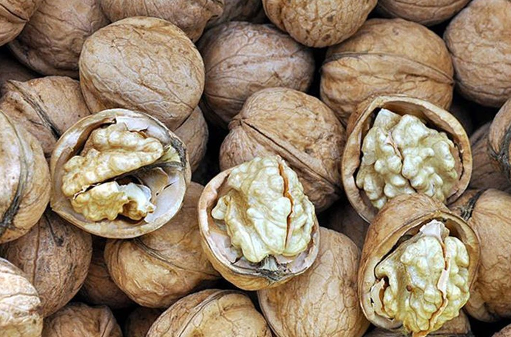
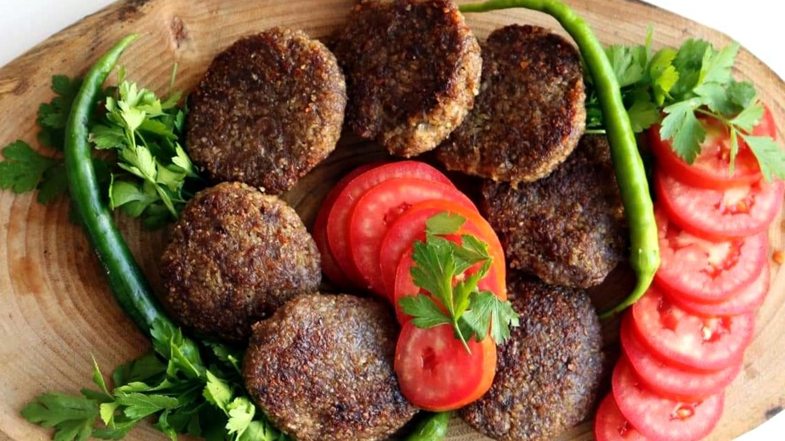
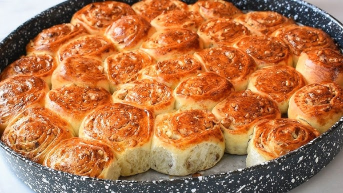

Kaman Sofrası
Asırlık tariflerin ceviz aromasıyla buluştuğu eşsiz bir mutfak kültürü.
Meşhur Kaman Cevizi
Dünya çapında tescilli olan Kaman cevizi, ince kabuğu ve beyaz içiyle bilinir. Sadece bir yemiş değil, Kaman mutfağının temel direğidir.

🌟 Neden Özel? Yüksek yağ oranı ve kendine has aromasıyla diğer cevizlerden ayrılır. Hafızayı güçlendirir ve kalp dostudur.
Kaman Besmeci
Kırşehir ve Kaman mutfağının en özel köftesidir. Yağsız kıyma, ince bulgur ve bol soğanın yoğurulmasıyla hazırlanır.

🔥 Püf Noktası
Gerçek bir Kaman Besmeci, sac üzerinde ve meşe odunu ateşinde pişirilmelidir. Yanında ayranla servis edilmesi gelenektir.
Kaman Cevizli Çöreği
Özellikle bayramlarda ve özel günlerde fırınlardan yayılan o meşhur koku bu çöreğe aittir. İçindeki bol cevizle tam bir enerji deposudur.

Hamurunun içine eklenen doğal tereyağı ve üzerine serpilen susamlarla damaklarda unutulmaz bir tat bırakır.